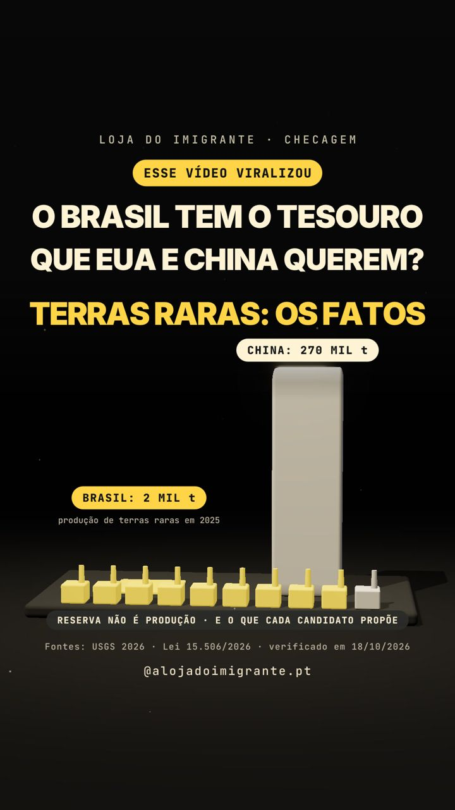
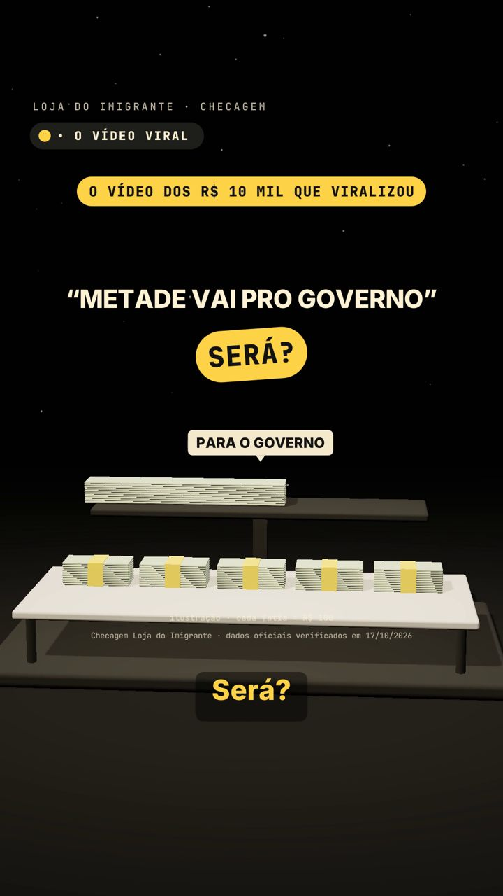
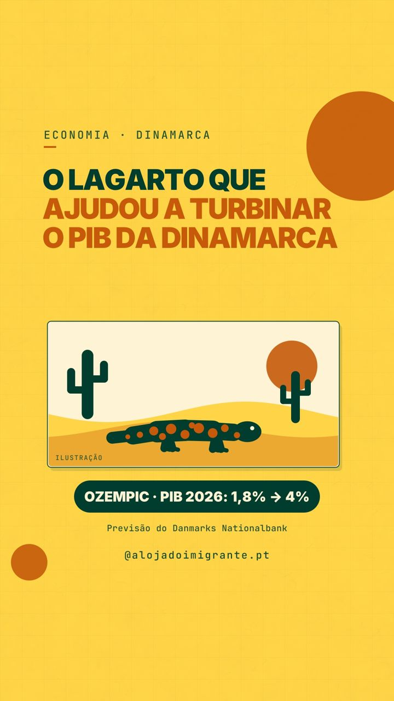
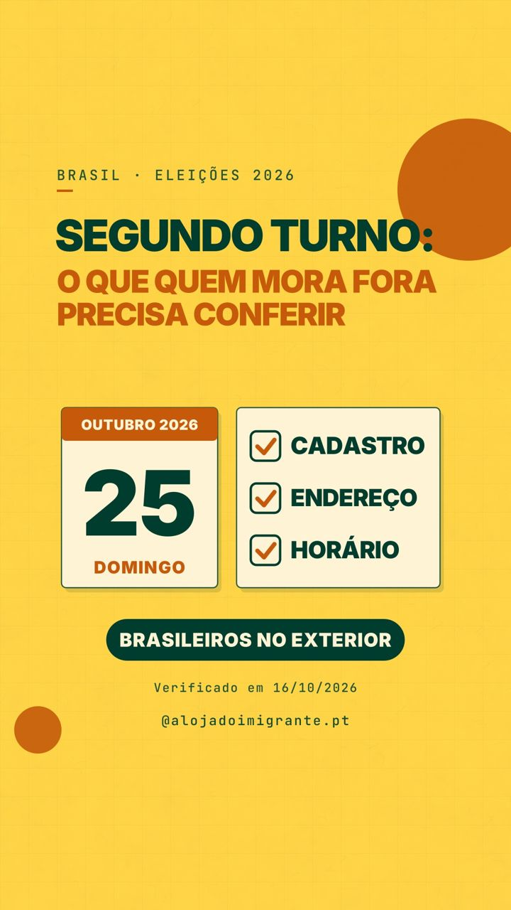
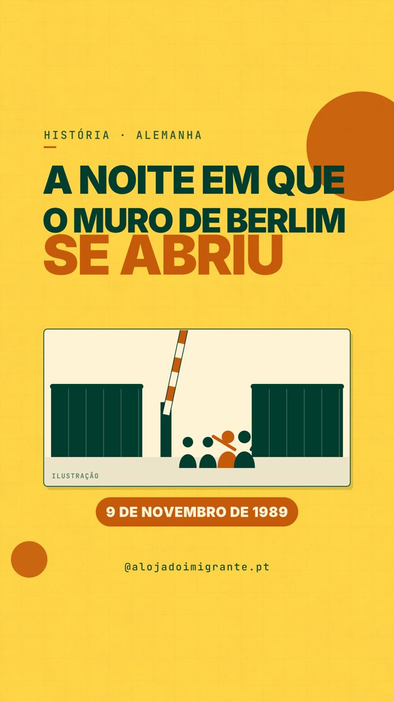
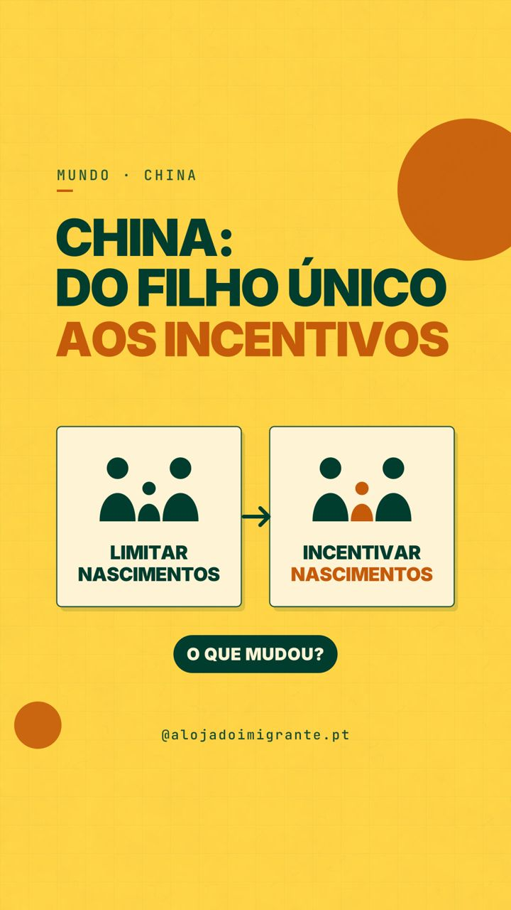
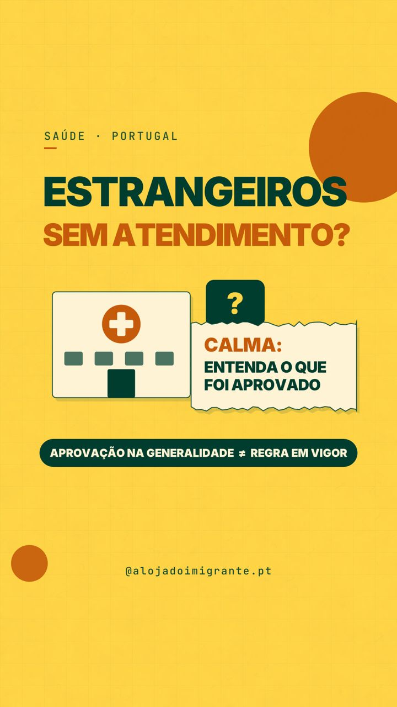
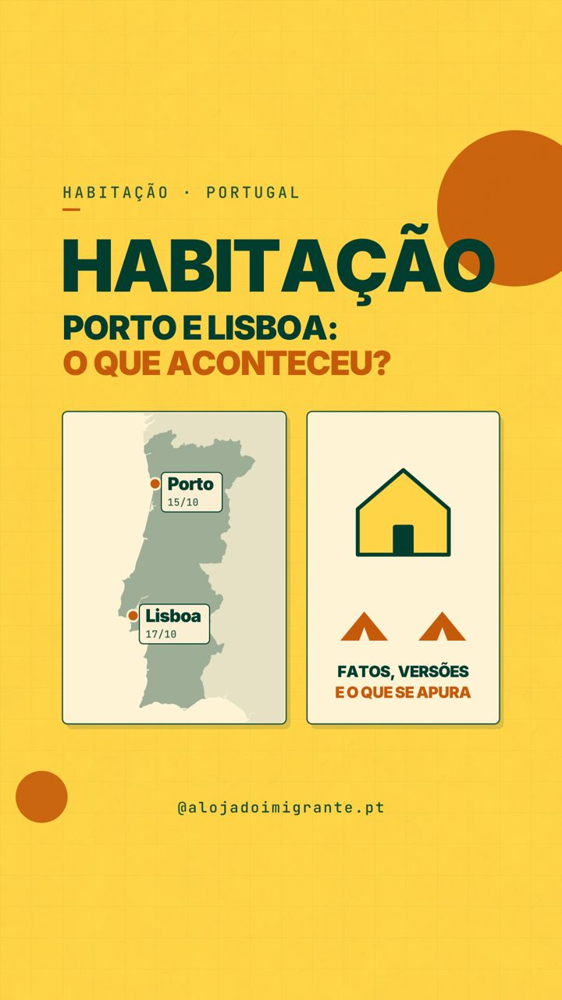
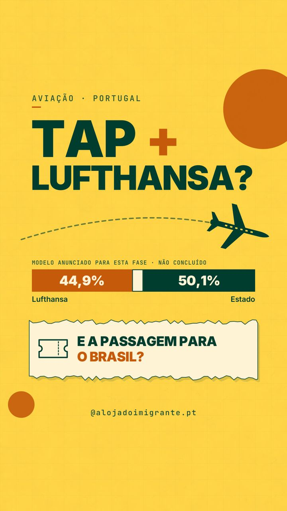
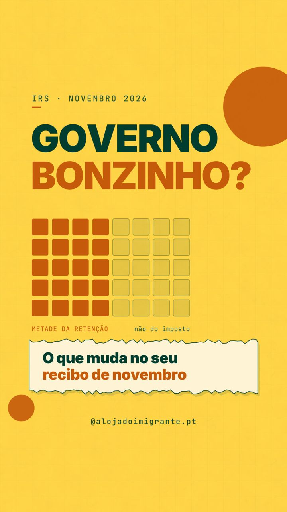

Checagem: o que é verdade no debate da Band, Lula x Flávio
O que circulou“Brasileiro vira espanhol em 2 anos e não faz prova de espanhol”
Checagem: cidadania espanhola em 2 anos sem prova de espanhol?
Manifestação: casas e custo de vida em Portugal

O que circulou“Só o Brasil pode substituir a China nas terras raras”
Checagem: Wagner Moura e as terras raras
O que circulou“Depois do processo, a Janja parou de viajar”
Checagem: Janja parou de viajar?
O que circulou“Empresária diz que Lula a usou como “boi de piranha”
Checagem: empresária acusa Lula · o que é fato?
O Brasil vai sair dos BRICS? Prós e contras

O que circulou“Metade do que uma padaria fatura fica com o governo”
Checagem: o vídeo viral dos R$ 10 mil
O que circulou“O passaporte no exterior ficou pela metade do preço”
Passaporte brasileiro pela metade do preço no exterior
Eleições 2026: empate técnico Flávio x Lula no 2º turno
O que circulou“Quase 1 em cada 3 estrangeiros em Portugal é brasileiro”
Brasileiros são quase 1 em cada 3 estrangeiros em Portugal
Fim da escala 6x1 explicado em 1 minuto e meio
O que circulou“A urna eletrônica pode ser hackeada pela internet”
A urna eletrônica pode ser hackeada pela internet?

O lagarto que ajudou a turbinar o PIB da Dinamarca

Segundo turno: o que quem mora fora precisa conferir

A noite em que o Muro de Berlim se abriu

China: do filho único aos incentivos

O que circulou“Estrangeiros vão ficar sem atendimento no SNS”
SNS: estrangeiros sem atendimento?

Habitação: o que aconteceu no Porto e em Lisboa

TAP e Lufthansa: e a passagem para o Brasil?
O que circulou“Estar irregular em Portugal é crime”
Estar irregular em Portugal é crime?

IRS em novembro: retenção cai pela metade
Nenhum vídeo com esse termo. Tente outra palavra.